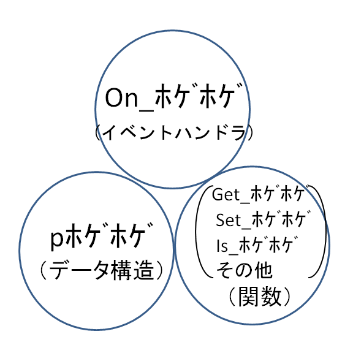
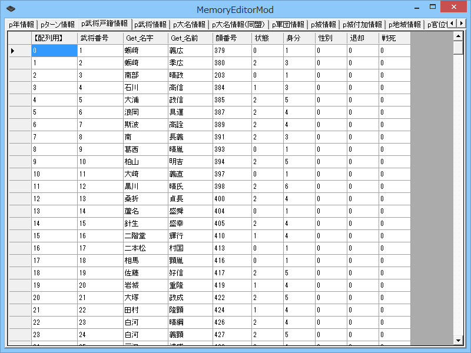

呼出し関係構図
まず、天翔記(tenshou.exe)はTSModを実行し、
TSModは、ScenarioModを実行します。
(下の層が上の層を呼び出す)

TSModは、必要なタイミングで、ScenarioModの「イベントハンドラ」を、呼び出します。
又、ScenarioModに搭載されている関数の一部もTSModが機能を提供しています。
前の章では、イベントハンドラという概念を学習しました。
そろそろ、「なんとなく見よう見まね」という段階から、１歩踏み込んだ学習をしていくのですが、
その前に、「ScenarioModの全容の概念」を学習します。
ScenarioModを使いこなしていくためには、仕組みや概念の大枠を理解していることがとても役立つからです。
まず、天翔記(tenshou.exe)はTSModを実行し、
TSModは、ScenarioModを実行します。
(下の層が上の層を呼び出す)
TSModは、必要なタイミングで、ScenarioModの「イベントハンドラ」を、呼び出します。
又、ScenarioModに搭載されている関数の一部もTSModが機能を提供しています。

「イベントハンドラ」という概念については、すでに学習しました。
「データ構造」というのは、天翔記の様々なパラメータにアクセスするための構造体のようなものです。
ScenarioModでは少し特殊な作りになっていますが、直観的に扱えるようになっています。
「関数」というのは、通常のプログラミングの「関数」と同じ意味です。
以上がScenarioModの３本柱であり、この３つを理解していることが、 ScenarioModを使いこなす上で重要です。
ScnearioModの「データ構造」を理解する上で、「メモリエディタ」を利用するとは理解の助けという意味で非常に役立ちます。
なぜならこのメモリエディタはScenarioModのデータ構造と一致するタブ構成となっているためです。
